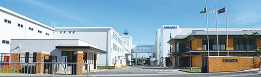
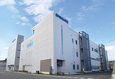
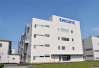
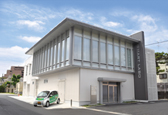

千里丘事業所は、主力製品の製造ラインや研究開発部門が集まる、エネゲートの開発・製造の拠点となっており、キュービクルやトランス、電力量計など、様々な電力施設で使用される製品やシステムを開発製造しています。設備の自動化や拡充でさらなる生産性向上を図り、お客さまのニーズにお応えする高品質な製品を提供しています。
地図はこちら

【ECOCUBE】計測システム事業部
〜スマートメーター製造ライン〜
2009年に電力量計ユニットの量産を開始、2019年には生産累計950万台を達成するなど、スマートメーターのトップランナーとして、最新の製造ラインで信頼性に優れたメーターを提供しています。
【南 館】トランス事業部
〜トランス製造ライン〜
コイルの製造、金型への樹脂注入・搬送、組立、検査まで一貫生産に自動化を推進、また生産管理システムの導入など、生産性を向上させた高品質な製品で、お客さまのニーズにお応えしています。
【東 館】制御機器事業部
〜キュービクル製造ライン〜
製造から検査・出荷までを一直線として製造ラインを効率化、また、自動倉庫システムの導入など、量産化にも対応した最新の設備で、さらなる生産性・品質の向上を図っています。
【スマートラボ】
〜環境実証・開発機器試験設備〜
HEMS実証試験室や配電自動化検証システム、各種試験設備を備えており、また、千里丘事業所構内のスマートグリッド実証設備の拠点として、関連機器の開発や実証研究をサポートしています。

ECOCUBE

南 館
東 館

スマートラボ
千里丘事業所は、1940年に「芦田工業所 千里丘工場」としてこの地で事業を開始しました。その後、 1945年には東光精機（株）へと社名変更、2004年にはグループ会社再編により（株）エネゲートとして再出発するなど、激しい時代の変化に対応しながら、新工場の建設や整備計画を進め、現在では当社の主力工場となっています。ＪＲ京都線「千里丘駅」からも近く、また環境にもやさしい工場として、今後も地域に愛される事業所をめざしていきたいと考えています。
千里丘事業所長